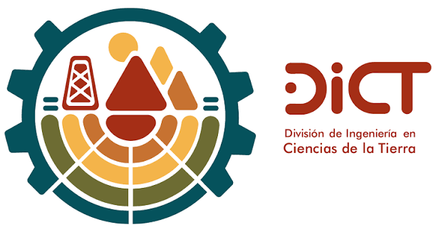
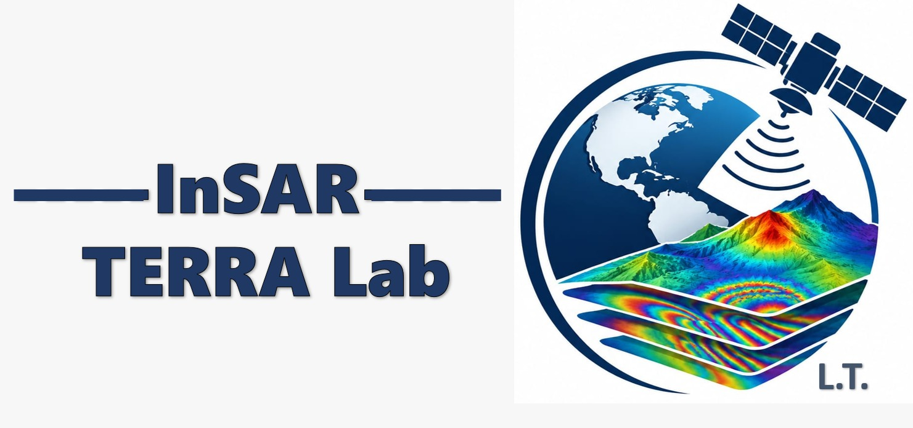

UAM
UAM
Crecimiento urbano, intensifica sobreexplotación del sistema hídrico
Análisis del impacto de la extracción de agua subterránea y la aceleración de la subsidencia en la cuenca del Valle de México.
Leer artículo completo →Terrestrial Engineering, Remote Sensing, Research & Applications




El InSAR TERRA Lab (Terrestrial Engineering, Remote Sensing, Research & Applications) de la Facultad de Ingeniería de la UNAM es un laboratorio especializado en el monitoreo integral de la superficie terrestre y el subsuelo desde una perspectiva ingenieril y geotécnica. Mediante la fusión de percepción remota satelital, sensores aerotransportados y geofísica aplicada, transformamos datos complejos en diagnósticos precisos y soluciones para la toma de decisiones estratégicas en el país, al tiempo que formamos a los futuros profesionales y especialistas en el dominio de estas tecnologías de vanguardia.
Contamos con una infraestructura tecnológica única que integra interferometría radar (InSAR) de precisión milimétrica, drones equipados con posicionamiento satelital de alta exactitud, escáneres LiDAR (terrestres y aerotransportados), georradar (GPR), resistivímetro para tomografía eléctrica y capacidad de supercómputo. Esta versatilidad nos permite atender tanto la geotecnia y la seguridad de infraestructura crítica (presas, transporte masivo, refinerías y zonas de subsidencia urbana) como problemáticas clave en ciencias de la Tierra, incluyendo sismicidad y microsismicidad, actividad volcánica, riesgos geológicos y monitoreo ambiental y de emisiones de carbono.
Generar conocimiento científico aplicado, soluciones de inteligencia geoespacial y formar profesionales de alto nivel mediante la integración de observación de la Tierra, sensores remotos, geofísica, geotecnia y supercómputo. Transformamos datos complejos de la superficie y el subsuelo en información estratégica para entender la dinámica terrestre, proteger infraestructura crítica y respaldar la toma de decisiones a escala local y global.
Consolidarnos como un laboratorio líder y referente internacional en analítica geoespacial e ingeniería terrestre desde la Facultad de Ingeniería de la UNAM. Aspiramos a impulsar la frontera del monitoreo continuo del planeta mediante la fusión multisensor y el procesamiento masivo de datos, convirtiéndonos en un aliado clave para la innovación científica, el desarrollo industrial y la formación de la próxima generación de especialistas en ciencias de la Tierra.
Evaluación cinemática y detección milimétrica de deformaciones estructurales en la cortina, estribos y laderas circundantes de la presa binacional La Amistad mediante análisis de series temporales InSAR multisensores.
Plataforma de alta resolución para cuantificar gradientes de deformación y subsidencia diferencial de hasta 40 cm/año a lo largo de líneas de metro, tren interurbano, acueductos y vialidades principales del Valle de México.
Caracterización de la estabilidad mecánica, fluctuaciones de embalse inducidas por eventos hidrometeorológicos extremos y diagnóstico de vulnerabilidad estructural en los vasos reguladores y presas de la cuenca poniente.
Monitoreo de hundimiento diferencial, inclinación angular y fracturamiento superficial que amenazan templos, monumentos coloniales y edificios históricos protegidos por la UNESCO en el corazón lacustre de la capital.
Compartimos el conocimiento y acercamos la geodesia espacial y las tecnologías de radar satelital a la comunidad científica, instituciones públicas, universidades y público general.
UAM
Análisis del impacto de la extracción de agua subterránea y la aceleración de la subsidencia en la cuenca del Valle de México.
Leer artículo completo → EL PAÍS
EL PAÍS
Reportaje a fondo sobre cómo la capital mexicana se hunde a ritmos históricos debido a las características geológicas y acuíferas de la zona lacustre.
Leer artículo completo → FIU NEWS
FIU NEWS
Datos satelitales InSAR revelan puntos críticos de deformación diferencial a lo largo de las líneas y estaciones del Sistema de Transporte Colectivo Metro.
Leer artículo completo → WIRED
WIRED
Investigación sobre el colapso y hundimiento acelerado de infraestructura subterránea urbana y las lecciones para megaciudades globales.
Leer artículo completo → THE GUARDIAN / NASA
THE GUARDIAN / NASA
Misiones de radar satelital (NISAR / Sentinel) registran tasas de deformación críticas que comprometen edificaciones y redes de agua potable.
Leer artículo completo → PRISMA LA VISTA
PRISMA LA VISTA
Explicación técnica y geológica sobre cómo las fracturas del terreno y el desnivel diferencial afectan las vías y estructuras del metro capitalino.
Leer artículo completo →Equipo multidisciplinario de científicos, ingenieros y estudiantes de la UNAM y centros asociados dedicados a la investigación de frontera en observación de la Tierra y geotecnia.

Experto en geodesia satelital, percepción remota, ingeniería geológica y geofísica aplicadas a entender las deformaciones en la superficie terrestre, así como riesgos geológicos y monitoreo de infraestructura crítica.

Académica e investigadora de la Facultad de Ingeniería de la UNAM, especialista en ingeniería geológica, geotecnia y dinámica de procesos terrestres aplicados a la evaluación y mitigación de riesgos.

Ingeniero geólogo, técnico académico de la Facultad de Ingeniería de la UNAM, especializado en mecánica de rocas, ingeniería geotécnica y caracterización geológica mediante drones.

Técnico académico de la División de Ingeniería en Ciencias de la Tierra (DICT) en la Facultad de Ingeniería de la UNAM. Su trabajo se enfoca en los Sistemas de Información Geográfica (SIG), la cartografía geomorfológica y la evaluación de vulnerabilidad ambiental e hídrica.
Coordinadora del Proyecto CONAGUA-CILA · Estudiante de Maestría en Ingeniería — Facultad de Ingeniería UNAM

Apoyo en el Proyecto de la Presa La Amistad · Estudiante de Maestría en Ciencia e Ingeniería de la Computación — IIMAS

Coordinadora del Proyecto SECTEI-SOBSE · Ingeniera Geofísica · Apoyo a la investigación y gestión de proyectos de monitoreo de infraestructura crítica
Coordinador del equipo de computación y desarrollo
Ingeniero en Sistemas Computacionales · Desarrollador de laboratorio
Doctorado en Ciencias de Información Geoespacial — CentroGeo SECIHTI
Maestría en Ciencia e Ingeniería de la Computación — IIMAS
Estudiante de Ingeniería Geológica
Estudiante de Ingeniería Geológica
Estudiante de Ingeniería Geológica
Estudiante de Ingeniería Geológica
Estudiante de Ingeniería Geológica
Estudiante de Ingeniería en Computación
Estudiante de Ingeniería en Computación
Estudiante de Ingeniería en Computación
Estudiante de Ingeniería en Computación
Estudiante de Ingeniería en Computación
Estudiante de Ingeniería en Computación
Estudiante de Ingeniería en Computación
Estudiante de Ingeniería en Computación
Estamos abiertos a colaboraciones de investigación, proyectos de monitoreo de infraestructura crítica, convenios institucionales y postulaciones para becas.